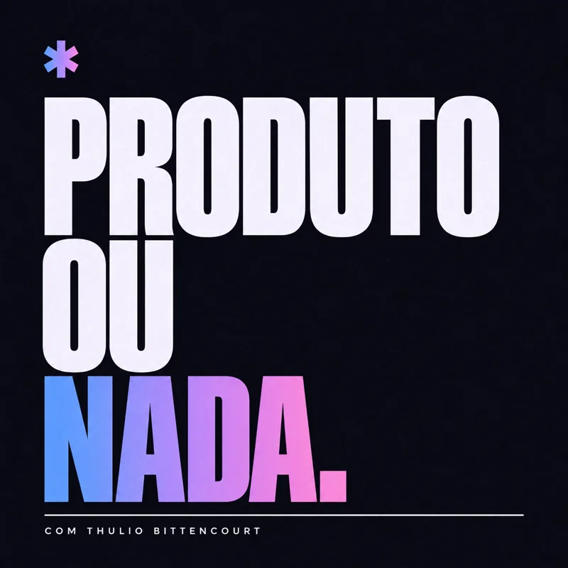
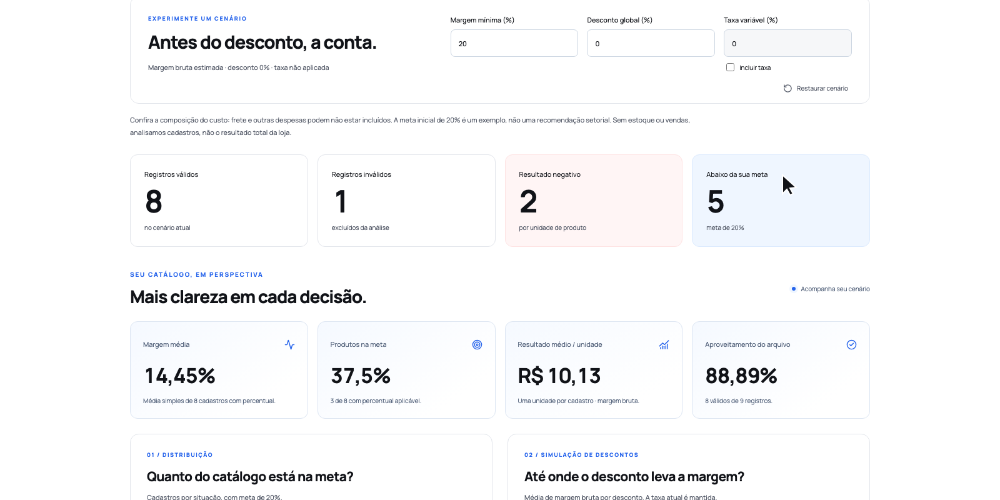

01
Uma ideia
com direção.
Problema, público e escopo. Defina o que merece ser construído antes de pedir a primeira linha de código.
ESTRATÉGIA & ESCOPOFORMAÇÃO PRÁTICA COM IA · PRÉ-VENDA
Aprenda a construir um software com IA, conectar APIs e preparar seu lançamento — com criativos, campanha e vídeo de demonstração.
Com Thulio Bittencourt“Um dia eu
tiro do papel.”

O Raio-X de Margem deu origem à formação. Veja o produto funcionando e explore as peças produzidas para apresentá-lo.
Demonstração do projeto que inspirou a formação. Este vídeo apresenta o software; as aulas da formação estão em preparação.

Aplicação real para analisar margens e simular cenários. A imagem usa um catálogo de demonstração.
Uma das peças de comunicação produzidas para o projeto. O produto e a mensagem caminham juntos.
Seis etapas conectadas.
Um projeto para enxergar o processo inteiro.
Problema, público e escopo. Defina o que merece ser construído antes de pedir a primeira linha de código.
ESTRATÉGIA & ESCOPOInterface, fluxos e funcionalidades. Use IA para executar, revisar e colocar a aplicação para funcionar.
DESENVOLVIMENTO COM IAIntegre APIs e serviços ao produto. Confira os dados e o funcionamento de ponta a ponta.
API & INTEGRAÇÕESTraduza a solução em uma mensagem clara. Crie a identidade e as peças que apresentam seu produto.
OFERTA & CRIATIVOSOrganize público, mensagem e materiais para levar o produto a quem precisa da solução.
PREPARAÇÃO DO LANÇAMENTOPrepare o vídeo de demonstração, mostre a experiência de uso e reúna as peças da entrega.
DEMONSTRAÇÃO & ENTREGAPara quem está no Vibe Coding, tem uma ideia na cabeça e quer conectar desenvolvimento, integração e lançamento em um projeto com direção.
Para software houses que já sabem construir e querem incorporar IA à produção, aproveitando a experiência técnica que a equipe já tem.
05 / SUA PRÓXIMA ENTREGA
O caminho completo para construir seu software e preparar seu lançamento com IA.
Construção, integração e lançamento com IA. Uma formação individual com Thulio Bittencourt.
Agora: PDF de boas-vindas com exercício inicial na área de membros.
Depois: aulas da formação, ainda em preparação. A data de liberação não foi definida.
Ferramentas, APIs, hospedagem e anúncios são custos à parte.
ENTRAR NA PRÉ-VENDAPagamento pela Kiwify · R$497 à vista
06 / SEM PONTAS SOLTAS
A formação está em pré-venda. As aulas estão em preparação e a data de liberação ainda não foi definida. Ao entrar, você encontra o PDF de boas-vindas com um exercício inicial.
A proposta atende quem está construindo com IA e também quem já desenvolve software. Familiaridade com ferramentas digitais ajuda. Você precisará executar, aprender os conceitos envolvidos e revisar o que a IA produzir; ela não dispensa critério técnico.
O foco é o processo completo de criação e preparação do lançamento. As ferramentas entram para resolver cada etapa: software, integrações, identidade, criativos, campanha e demonstração.
Sim. O processo pode ser estudado por profissionais que querem incorporar IA à construção e à apresentação das soluções. A oferta desta página é individual; ela não inclui implantação, consultoria ou treinamento privado da equipe.
Não. Assinaturas de ferramentas, uso de APIs, hospedagem e investimento em anúncios são custos externos. O investimento de R$497 é referente à formação.
Você vai estudar a construção de um software e sua preparação comercial. Vendas dependem do problema escolhido, do mercado, da execução e da oferta. A formação não promete faturamento nem um prazo fixo para concluir qualquer projeto.